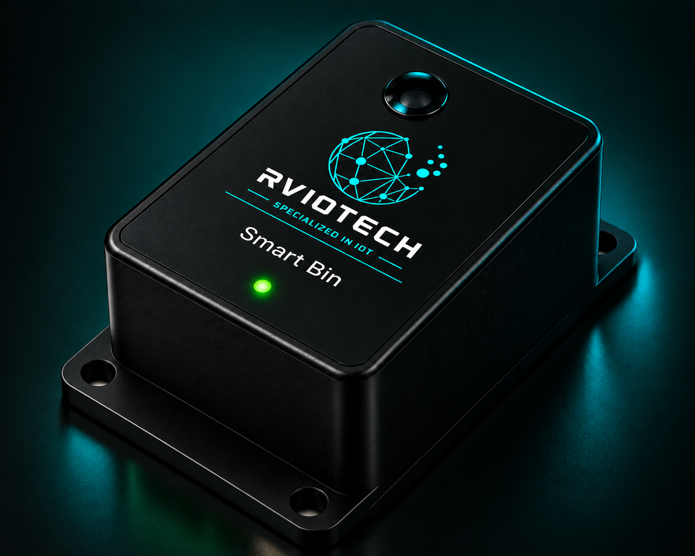

Concept image. Final product design may vary.
Smart Bin
An IoT-enabled waste monitoring solution designed to monitor bin fill levels and provide useful information for smarter and more efficient waste collection.
ENQUIRE ABOUT THIS PRODUCT →
Monitor Fill Levels
Before Collection
The Smart Bin uses a level-sensing system to determine the approximate fill condition of the bin. The collected information can be transmitted through a suitable wireless gateway or connectivity platform for monitoring and collection planning.
Move From Fixed
Collection Schedules
To Smarter Monitoring
Traditional waste collection often follows fixed schedules, which can result in unnecessary collection trips or overflowing bins. Smart Bin monitoring provides visibility into actual bin conditions so collection activities can be planned more effectively.
- Waste fill-level monitoring
- Wireless IoT connectivity
- Remote monitoring
- Configurable reporting intervals
- Low-power operation
- Suitable for outdoor and indoor applications
- Integration with monitoring platforms
- Reduces unnecessary collection trips
- Provides visibility of bin conditions
- Supports better collection planning
- Enables remote monitoring
- Helps improve operational efficiency
- Can integrate with existing IoT platforms
Make Waste Collection Smarter
Looking to monitor waste levels across buildings, communities or facilities? Talk to us about your application and deployment requirements.